Sacroiliac joint inflammation (sacroiliitis)
Pain low on one or both sides of the back and in the buttock, where the spine meets the pelvis
What it is
Pain low on one or both sides of the back and in the buttock, caused by irritation or inflammation of the joint where the spine meets the pelvis.
- Low back and buttock
- Where spine meets pelvis
- Worse on stairs
- Which doctor
- Family doctor, rheumatologist, orthopaedic doctor, physiotherapist
- Common in
- Young adults (inflammatory types), pregnancy and after childbirth, people with a past fall or uneven walking
- Contagious
- No
- Course
- Depends on the cause: mechanical pain often eases over weeks with physiotherapy; inflammatory types are long-term and need specialist care
Medical details
What happens in the sacroiliac joints
The two sacroiliac joints join the sacrum (the triangular bone at the base of the spine) to the pelvis on each side. They are held together by very strong ligaments, move only a little, and carry the weight of the upper body down to the legs. When one or both joints are irritated or inflamed, pain is felt low on one or both sides of the back and in the buttock. The pain can spread into the groin or the back of the thigh, but it usually does not go below the knee.
Common types
- Mechanical: wear of the joint, an injury, uneven walking, or the loosening of the ligaments in pregnancy and after childbirth
- Inflammatory: part of axial spondyloarthritis, which includes ankylosing spondylitis, and also seen with psoriatic arthritis and arthritis linked to bowel conditions; these are long-term and need a specialist
- Infection: rare; it comes with fever and severe pain and needs urgent care
Outlook
Mechanical sacroiliac pain often settles over weeks to a few months with gentle movement, physiotherapy and care of daily habits. Pain that began in pregnancy usually eases after the baby is born, although it can last for a while. Inflammatory types last for years and usually need medicines and regular care from a rheumatologist. Treatment decisions are made by your doctor.
Common signs
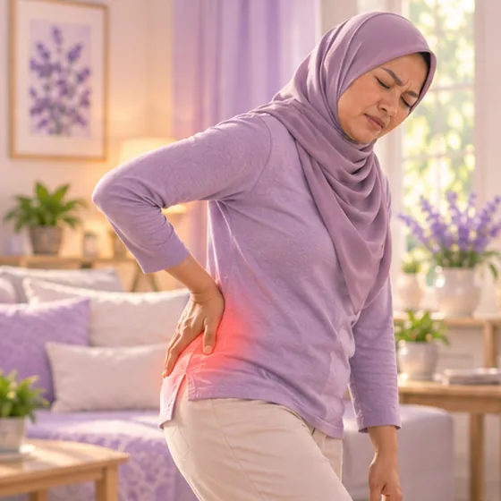
Pain low on one side of the backUnilateral sacroiliac pain 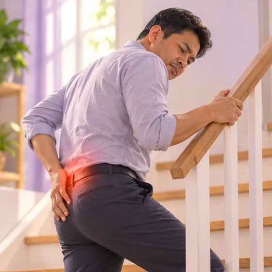
Pain on the stairsPain with single-leg loading 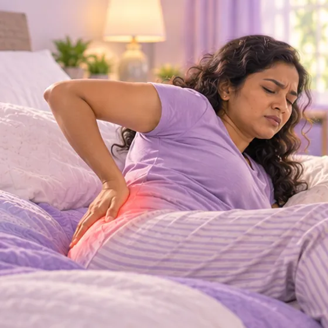
Pain when turning over in bedPain with pelvic rotation 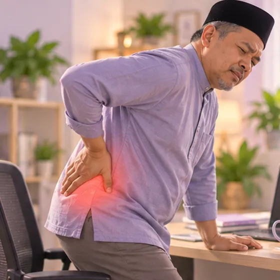
Hard to stand up after sittingPain on sit-to-stand Pain when standing on one legPain with single-leg stance 
Stiff back in the morningMorning stiffness
Medical details
Symptoms in more detail
- Low back and buttock pain: a deep ache, sometimes sharp, just beside the base of the spine and above the buttock, often worse on one side; inflammatory types can affect both sides
- Buttock, groin and thigh: the pain can spread into the buttock, the groin or the back of the thigh, but it usually does not go below the knee
- Worse with: climbing stairs, standing on one leg, getting up from a chair, turning over in bed, sitting or standing for a long time, and running
- Inflammatory pattern: morning stiffness that lasts longer than 30 minutes and eases with movement, pain that wakes you in the second half of the night, and pain that is better with exercise and worse with rest; this pattern is more typical in people under about 45
- Warning signs: fever with severe pain, numbness around the groin, new trouble with urine or bowels, or weakness in the legs: go to hospital now
Why it happens
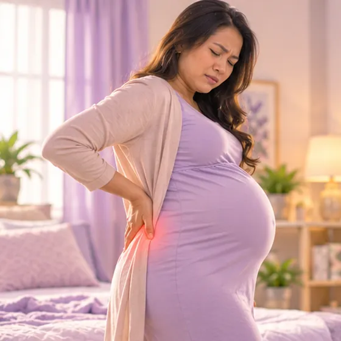
Pregnancy and childbirthLigament laxity and joint strain 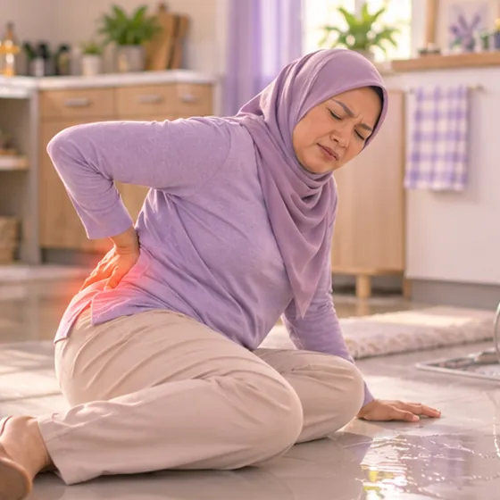
A fall onto the buttocksPelvic trauma 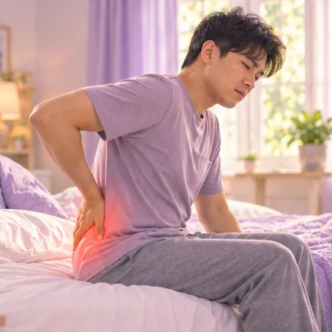
Inflammatory arthritisAxial spondyloarthritis 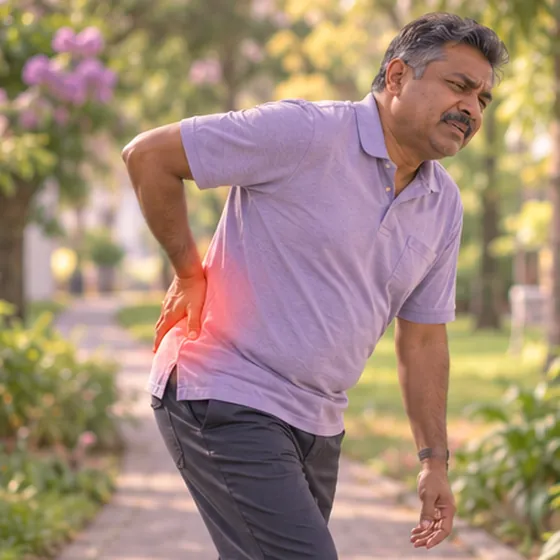
Walking unevenlyGait asymmetry or leg length difference 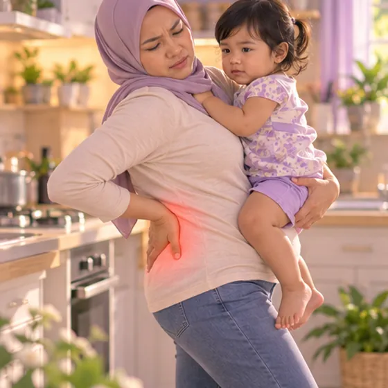
Carrying a child on one hipAsymmetric pelvic loading 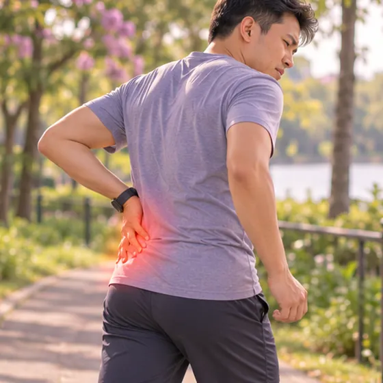
Repeated high-impact exerciseRepetitive impact loading
Medical details
Causes and risk factors
- Uneven loading and wear: age-related wear, an old injury, a difference in leg length, a limp, or always carrying a child or a bag on the same side can overload one joint
- Pregnancy and childbirth: hormones loosen the ligaments, the growing baby changes how the weight is carried, and the joints can be strained during labour; the pain often eases after the birth
- Injury: a fall onto the buttocks, a car accident or a hard landing can injure the joint or its ligaments
- Inflammatory arthritis: axial spondyloarthritis (including ankylosing spondylitis), psoriatic arthritis and arthritis linked to bowel conditions; they often start in young adults, and a family history or the HLA-B27 gene raises the risk, although many people with the gene stay well
- Infection: rare; germs can reach the joint through the blood, most often in people with a weakened immune system, and it needs urgent treatment
- Other risk factors: repeated high-impact exercise such as running, extra body weight, and earlier surgery on the lower spine
See a doctor first if
- Fever or chills with severe pain in the back and buttock: go to hospital now
- Numb around the groin, or trouble passing urine or controlling the bowels: go to hospital now
- A weak leg or foot
- Pain after a fall or accident
- Morning stiffness for more than 30 minutes with night pain, especially under 45, or red painful eyes, or a skin or bowel condition with back pain: a rheumatologist may be needed
- Pain not easing after about 6 weeks
- Pregnant, with severe pain, bleeding or fluid loss: call your midwife or doctor now
If any apply, please see a doctor before a session.
Keep taking your normal medicine and keep seeing your doctor. Our session is a gentle support and does not replace medical care.
Medical details
How doctors check it
Findings are always read together with your symptoms and examination, because many people with changes on a scan have no pain.
- History and examination: how you walk and stand, and movement and pressure tests that stress the sacroiliac joint to see whether they bring on your usual pain
- X-ray: may show changes in the joint after some time, but it can look normal early on
- MRI: shows inflammation in the joint and the bone beside it before changes appear on X-ray; used when an inflammatory type is suspected
- Blood tests: markers of inflammation (CRP, ESR) and sometimes the HLA-B27 gene; they support the diagnosis but cannot confirm it on their own
- Joint injection: sometimes a numbing medicine is injected into the joint; if the pain goes away for a while, the joint is likely the source
Problems that can feel similar
A slipped disc, sciatica, hip joint problems, piriformis syndrome and pain from the small joints at the back of the spine (lumbar facet joints) can feel like sacroiliac pain, so a doctor checks to tell them apart. Back pain with a fever, weight loss without trying, or a past cancer needs a doctor's check without delay.
Looking after yourself
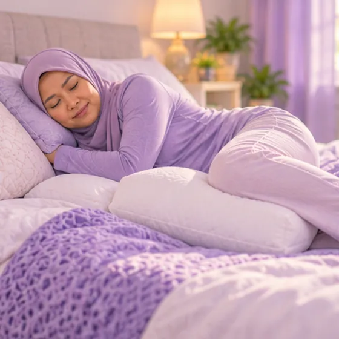
A pillow between the kneesPelvic alignment in side-lying 
A warm pack on the lower backSuperficial heat 
Walk a little every dayLow-impact aerobic exercise 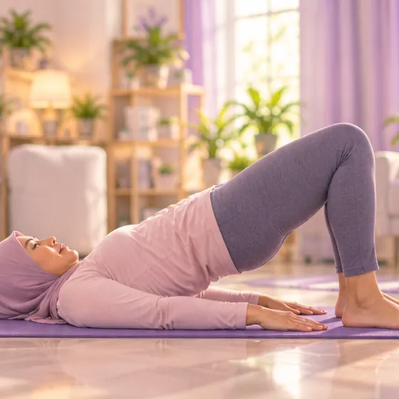
A gentle bridge exerciseGluteal and pelvic stabilisation 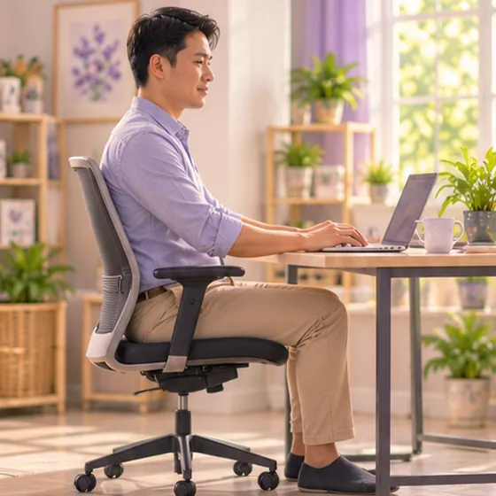
Sit evenly, feet flatSymmetrical sitting posture 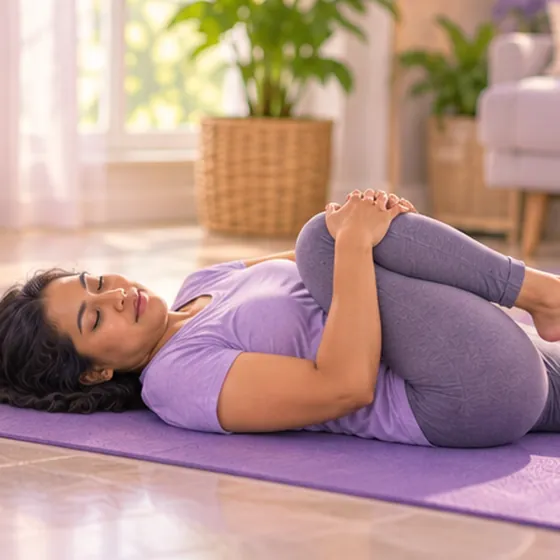
Gentle hip stretchesHip mobility exercise
Medical details
Daily care in more detail
- Stay gently active: short walks and gentle movement usually help more than long rest; for now avoid movements that bring the pain on, such as long strides, deep lunges and high-impact exercise
- Warmth: a warm pack on the lower back or buttock can ease tight muscles
- Sleep: lie on your back, or on the side that does not hurt, with a pillow between your knees to keep the hips level
- Sit and stand evenly: sit with both feet flat and your weight even on both sides, stand with your weight on both feet, and avoid standing for long on one leg or always carrying a child or a bag on the same side
- Exercises: gentle bridges and hip stretches within a comfortable range; a physiotherapist can show which pelvic stability exercises suit you
- Pain relief and medicines: ask your doctor or pharmacist what is safe for you; inflammatory types need medicines prescribed by a doctor, and you should not start new medicine on your own
Tell your therapist
- Pregnancy
- Recent back injury or surgery
- Pacemaker or metal implant
- Blood-thinning medicine
- Weak bones
- Numb or tingling leg or foot
Your therapist will go through this with you before starting.
Questions and answers
What is Sacroiliac joint inflammation (sacroiliitis)?
Pain low on one or both sides of the back and in the buttock, where the spine meets the pelvis. Pain low on one or both sides of the back and in the buttock, caused by irritation or inflammation of the joint where the spine meets the pelvis.
What are the common signs of Sacroiliac joint inflammation (sacroiliitis)?
Pain low on one side of the back · Pain on the stairs · Pain when turning over in bed · Hard to stand up after sitting · Pain when standing on one leg · Stiff back in the morning
Why does Sacroiliac joint inflammation (sacroiliitis) happen?
Pregnancy and childbirth · A fall onto the buttocks · Inflammatory arthritis · Walking unevenly · Carrying a child on one hip · Repeated high-impact exercise
How can I look after myself with Sacroiliac joint inflammation (sacroiliitis)?
A pillow between the knees · A warm pack on the lower back · Walk a little every day · A gentle bridge exercise · Sit evenly, feet flat · Gentle hip stretches
Can an AI Body Master session help with Sacroiliac joint inflammation (sacroiliitis)?
A session is gentle, needle-free meridian support for your wellbeing. It does not treat or cure Sacroiliac joint inflammation (sacroiliitis) and never replaces your medicine or your doctor. Tell your therapist about it before the session starts.
Related conditions
References: Mayo Clinic: Sacroiliitis; Cleveland Clinic: Sacroiliitis; NCBI StatPearls: Sacroiliitis; NHS: Ankylosing spondylitis
Page updated: 2026-11-01